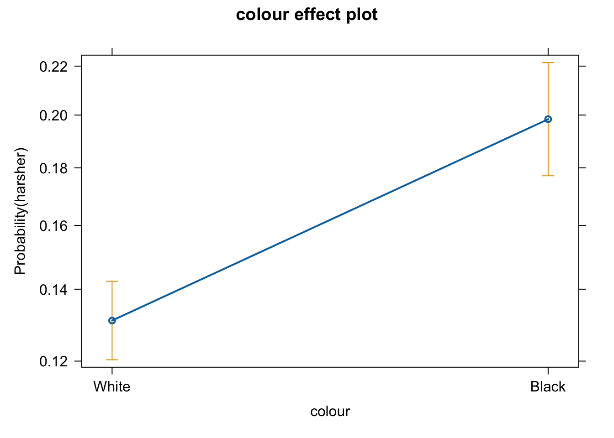
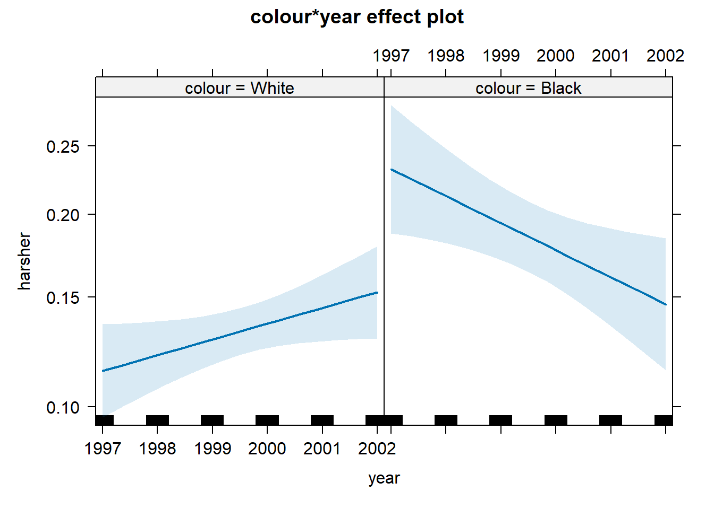
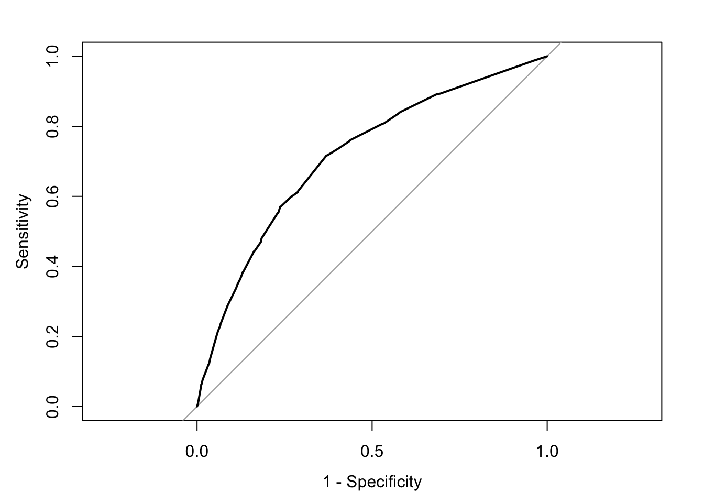

Chapter 8 Studying relationships between two factors
8.1 Cross-tabulations
In earlier sessions, we covered how to run frequency distributions using the table() function. Cross tabulations, also called contingency tables, are essentially crossed frequency distributions, where you plot the frequency distributions of more than one variable simultaneously. This semester, we are only going to explore two-way cross-tabulations, that is, contingency tables where we plot the frequency distribution of two variables at the same time. Frequency distributions are a useful way of exploring categorical variables that do not have too many categories. By extension, cross-tabulations are a useful way of exploring relationships between two categorical variables that do not have too many levels or categories.
As we learned during the first week, we can get results from R in various ways. You can produce basic tables with some of the core functions in R. However, I suggest you install and load the package gmodels to produce the sort of cross-tabs we will use. This package allows you to produce cross-tabulations in a format similar to the one used by commercial statistical packages SPSS and SAS. Since some of you may have previous experience with SPSS, we will use the SPSS format. Cross-tabs with this package are more useful for our purposes than the default you may get with the core R table() function.
We will begin the session by loading again the BCS 2007/2008 data from previous weeks.
BCS0708<-read.csv("https://raw.githubusercontent.com/uom-resquant/modelling_book/refs/heads/master/datasets/BCS0708.csv")We will start by producing a cross-tabulation of victimisation (“bcsvictim”), a categorical unordered variable, by whether the presence of rubbish in the streets is a problem in the area of residence (“rubbcomm”), another categorical ordered variable. The broken windows theory would argue that we should see a relationship. We will use the following code:
library(gmodels)
with(BCS0708, CrossTable(rubbcomm, bcsvictim, prop.chisq = FALSE, format = c("SPSS")))##
## Cell Contents
## |-------------------------|
## | Count |
## | Row Percent |
## | Column Percent |
## | Total Percent |
## |-------------------------|
##
## Total Observations in Table: 11065
##
## | bcsvictim
## rubbcomm | not a victim of crime | victim of crime | Row Total |
## ------------------|-----------------------|-----------------------|-----------------------|
## fairly common | 876 | 368 | 1244 |
## | 70.418% | 29.582% | 11.243% |
## | 9.950% | 16.276% | |
## | 7.917% | 3.326% | |
## ------------------|-----------------------|-----------------------|-----------------------|
## not at all common | 4614 | 849 | 5463 |
## | 84.459% | 15.541% | 49.372% |
## | 52.408% | 37.550% | |
## | 41.699% | 7.673% | |
## ------------------|-----------------------|-----------------------|-----------------------|
## not very common | 3173 | 981 | 4154 |
## | 76.384% | 23.616% | 37.542% |
## | 36.040% | 43.388% | |
## | 28.676% | 8.866% | |
## ------------------|-----------------------|-----------------------|-----------------------|
## very common | 141 | 63 | 204 |
## | 69.118% | 30.882% | 1.844% |
## | 1.602% | 2.786% | |
## | 1.274% | 0.569% | |
## ------------------|-----------------------|-----------------------|-----------------------|
## Column Total | 8804 | 2261 | 11065 |
## | 79.566% | 20.434% | |
## ------------------|-----------------------|-----------------------|-----------------------|
##
## #In CrossTable(), we are using the name of the variable defining the rows as our first argument, and as our second argument, the name of the variable defining the columns. We are also telling R that we don't yet want any test of statistical significance and that we want the table to look like it would in SPSS.The cells for the central two columns represent the total number of cases in each category, the row percentages, the column percentages, and the total percentages. So you have, for example, 63 people in the category “rubbish is very common” who were victims of a crime; this represents 30.88% of all the people in the “rubbish is very common” category (your row per cent), 2.79% of all the people in the “victim of a crime” category (your column per cent), and 0.57% of all the people in the sample.
Let’s check the level of measurement of the “rubbcomm” variable with the class() function:
## [1] "character"It is categorical, we know, but note that R considers this “character” rather than “factor”, which is what we would like. To make sure that R knows this is a factor, we can convert it with the as.factor() function. PAY ATTENTION: we are not recoding, so we use as.factor() with a dot (as.dot.factor), and we are not using the as_factor() from the haven package, which we would use to recode if this were a *.dta file (it’s not!).
In the table above, we notice that although “rubbcomm” is an ordinal variable, the order in which it is printed does not make logical sense. We can check the order of the encoding using the levels() function.
## [1] "fairly common" "not at all common" "not very common"
## [4] "very common"As we can see, the order makes little sense. We should reorder the factor levels to make them follow a logical order. There are multiple ways to do this, some of which we have already seen. This is one possible way of doing it.
BCS0708$rubbcomm <- factor(BCS0708$rubbcomm,
levels = c("not at all common",
"not very common", "fairly common",
"very common"))You are only interested in the proportions or percentages that allow you to make meaningful comparisons. Although you can do cross-tabs for variables in which a priori you don’t think of one of them as the one doing the explaining (your independent variable) and another to be explained (your dependent variable), most often, you will already be thinking of them in this way. Here, we think of victimisation as the outcome we want to explain and “rubbish in the area” as the factor that may help us explain variation in victimisation.
If you have a dependent variable, you need to request only the percentages that allow you to make comparisons across your independent variable (how common rubbish is) for the outcome of interest (victimisation). In this case, with our outcome (victimisation) defining the columns, we would request and compare the row percentages only. On the other hand, if our outcome were the variable defining the rows, we would be interested in the column percentages instead. Pay very close attention to this. It is a very common mistake to interpret a cross tab the wrong way if you don’t do as explained here.
To reiterate, there are two rules for producing and reading cross tabs the right way. The first rule for reading cross-tabulations is that if your dependent variable is defining the rows, then you ask for the column percentages. If, on the other hand, you decided that you preferred to have your dependent variable define the columns (as seen here), then you would need to ask for the row percentages. Make sure you remember this.
To avoid confusion when looking at the table, you could also modify the code to only ask for the relevant percentages. In this case, we will ask for the row percentages. We can control what gets printed in the main console using the different options of the CrossTable() function. By default, this function prints all the percentages, but most of them are not terribly useful for our purposes here. So, we are going to modify the default options by asking R not to print the column or the total percentages.
with(BCS0708, CrossTable(rubbcomm, bcsvictim,
prop.chisq=FALSE, prop.c=FALSE,
prop.t=FALSE, format=c("SPSS")))##
## Cell Contents
## |-------------------------|
## | Count |
## | Row Percent |
## |-------------------------|
##
## Total Observations in Table: 11065
##
## | bcsvictim
## rubbcomm | not a victim of crime | victim of crime | Row Total |
## ------------------|-----------------------|-----------------------|-----------------------|
## not at all common | 4614 | 849 | 5463 |
## | 84.459% | 15.541% | 49.372% |
## ------------------|-----------------------|-----------------------|-----------------------|
## not very common | 3173 | 981 | 4154 |
## | 76.384% | 23.616% | 37.542% |
## ------------------|-----------------------|-----------------------|-----------------------|
## fairly common | 876 | 368 | 1244 |
## | 70.418% | 29.582% | 11.243% |
## ------------------|-----------------------|-----------------------|-----------------------|
## very common | 141 | 63 | 204 |
## | 69.118% | 30.882% | 1.844% |
## ------------------|-----------------------|-----------------------|-----------------------|
## Column Total | 8804 | 2261 | 11065 |
## ------------------|-----------------------|-----------------------|-----------------------|
##
## Much less cluttered. Now, we only see the counts and the row percentages. Marginal frequencies appear along the right and the bottom. Row marginals show the total number of cases in each row: 204 people perceive rubbish as very common in the area they’re living in, whereas 1244 perceive rubbish as fairly common in their area, etc. Column marginals indicate the total number of cases in each column: 8804 non-victims and 2261 victims.
In the central cells, we see the total number for each combination of categories and now only the row percentage. So, the total in each of those cells is expressed as the percentage of cases in that row. So, for example, 63 people who perceive rubbish as very common in their area who are victims of a crime represent 30.88%% of all people in that row (n=204). If we had asked for the column percentages, the 63 people who live in areas where rubbish is very common and are victims would be divided by the 2261 victims in the study. Changing the denominator when computing the percentage changes the meaning of the percentage.
This can sound a bit confusing now. But as long as you remember the first rule we gave you before, you should be fine: if your dependent defines the rows, ask for the column percentages; if your dependent defines the columns, ask for the row percentages. There are always students who get this wrong in the assignments and lose points as a result. Don’t let it be you.
The second rule for reading cross-tabulations the right way is this: You make the comparisons across the right percentages (see first rule) in the direction where they do not add up to a hundred. Another way of saying this is that you compare the percentages for each level of your dependent variable across the levels of your independent variable. In this case, we would, for example, compare “What percentage of people who perceive rubbish as common in their area are victims of crime?”. We focus on the second column here (being a victim of a crime) because, typically, that’s what we want to study; this is our outcome of interest (e.g., victimisation). We can see rubbish seems to matter a bit. For example, 30.88% of people who live in areas where rubbish is very common have been victimised. By contrast, only 15.54% of people who live in areas where rubbish is not at all common have been victimised in the previous year.
8.2 Expected frequencies and Chi-Square
So far, we have only described our sample. Can we infer that the differences we observed in this sample can be generalised to the population from which this sample was drawn? Every time you draw a sample from the same population, the results will be slightly different, and we will have a different combination of people in these cells.
To assess that possibility, we carry out a test of statistical significance. This test allows us to examine the null hypothesis. So, our hypothesis is that there is a relationship between the two variables, while our null hypothesis is that there is no relationship. In this case, the null hypothesis states that in the population from which this sample was drawn, victimisation and how common rubbish is in your area are independent events; that is, they are not related to each other. The materials you read as preparation explained the test appropriate for this case is the chi-square test. You should know that what this test does is to contrast the squared average difference between the observed frequencies and the expected frequencies (divided by the expected frequencies). We can see the expected frequencies for each cell modifying the options of the CrossTable function in the following manner:
with(BCS0708, CrossTable(rubbcomm, bcsvictim,
expected = TRUE, prop.c = FALSE,
prop.t = FALSE, format = c("SPSS")))##
## Cell Contents
## |-------------------------|
## | Count |
## | Expected Values |
## | Chi-square contribution |
## | Row Percent |
## |-------------------------|
##
## Total Observations in Table: 11065
##
## | bcsvictim
## rubbcomm | not a victim of crime | victim of crime | Row Total |
## ------------------|-----------------------|-----------------------|-----------------------|
## not at all common | 4614 | 849 | 5463 |
## | 4346.701 | 1116.299 | |
## | 16.437 | 64.005 | |
## | 84.459% | 15.541% | 49.372% |
## ------------------|-----------------------|-----------------------|-----------------------|
## not very common | 3173 | 981 | 4154 |
## | 3305.180 | 848.820 | |
## | 5.286 | 20.583 | |
## | 76.384% | 23.616% | 37.542% |
## ------------------|-----------------------|-----------------------|-----------------------|
## fairly common | 876 | 368 | 1244 |
## | 989.804 | 254.196 | |
## | 13.085 | 50.950 | |
## | 70.418% | 29.582% | 11.243% |
## ------------------|-----------------------|-----------------------|-----------------------|
## very common | 141 | 63 | 204 |
## | 162.315 | 41.685 | |
## | 2.799 | 10.899 | |
## | 69.118% | 30.882% | 1.844% |
## ------------------|-----------------------|-----------------------|-----------------------|
## Column Total | 8804 | 2261 | 11065 |
## ------------------|-----------------------|-----------------------|-----------------------|
##
##
## Statistics for All Table Factors
##
##
## Pearson's Chi-squared test
## ------------------------------------------------------------
## Chi^2 = 184.0443 d.f. = 3 p = 1.180409e-39
##
##
##
## Minimum expected frequency: 41.68495For example, although 63 people lived in areas where rubbish was very common and experienced victimisation in the past year, under the null hypothesis of no relationship, we should expect this value to be 41.69. Thus, there are more people in this cell than we would expect under the null hypothesis.
The Chi-Square test
- compares these expected frequencies with the ones we actually observe in each of the cells;
- then averages the differences across the cells and
- produces a standardised value that
- we look at a Chi-Square distribution to see how probable/improbable it is.
If this absolute value is large, it will have a small p-value associated with it, and we will be in a position to reject the null hypothesis. We conclude that observing such a large chi-square is improbable if the null hypothesis is true. In practice, we don’t actually do any of this. We just run the Chi-Square in our software and look at the p-value. But it is helpful to know what the test is actually doing.
Asking for the expected frequencies with CrossTable() automatically prints the Chi-Square test results. In this case, you get a Chi-Square of 184.04, with 3 degrees of freedom. The probability associated with this particular value is nearly zero (1.180e-39). This value is considerably lower than the standard alpha level of .05. So these results would lead us to conclude that there is a statistically significant relationship between these two variables. We can reject the null hypothesis that these two variables are independent in the population from which this sample was drawn. In other words, this significant Chi-Square test means that we can assume that there was indeed a relationship between our indicator of broken windows (perceived disorder, here rubbish) and victimisation in the population of England and Wales in 2007/2008.
Notice that R is telling us that the minimum expected frequency is 41.68. Why? Find the answer in the appendix.
8.3 Odds and odd ratios
When you have two dichotomous nominal-level variables, which can take only two possible levels, odds ratios are one of the more commonly used measures to indicate the strength of an association. Odds ratios and relative risk are commonly used in public health and criminological research. If you have knowledge of betting, you may already know a thing or two about odds.
They are the statistical equivalent of a tongue twister, so don’t worry too much if you need to keep looking at this handout whenever you want to interpret them. We are going to look at the relationship between victimisation and living in a rural/urban setting:
with(BCS0708, CrossTable(rural2, bcsvictim, prop.c = FALSE,
prop.t = FALSE, expected = TRUE,
format = c("SPSS")))##
## Cell Contents
## |-------------------------|
## | Count |
## | Expected Values |
## | Chi-square contribution |
## | Row Percent |
## |-------------------------|
##
## Total Observations in Table: 11676
##
## | bcsvictim
## rural2 | not a victim of crime | victim of crime | Row Total |
## -------------|-----------------------|-----------------------|-----------------------|
## rural | 2561 | 413 | 2974 |
## | 2373.393 | 600.607 | |
## | 14.830 | 58.602 | |
## | 86.113% | 13.887% | 25.471% |
## -------------|-----------------------|-----------------------|-----------------------|
## urban | 6757 | 1945 | 8702 |
## | 6944.607 | 1757.393 | |
## | 5.068 | 20.028 | |
## | 77.649% | 22.351% | 74.529% |
## -------------|-----------------------|-----------------------|-----------------------|
## Column Total | 9318 | 2358 | 11676 |
## -------------|-----------------------|-----------------------|-----------------------|
##
##
## Statistics for All Table Factors
##
##
## Pearson's Chi-squared test
## ------------------------------------------------------------
## Chi^2 = 98.52709 d.f. = 1 p = 3.206093e-23
##
## Pearson's Chi-squared test with Yates' continuity correction
## ------------------------------------------------------------
## Chi^2 = 98.00261 d.f. = 1 p = 4.178318e-23
##
##
## Minimum expected frequency: 600.6074So, we can see that 22% of urban dwellers, compared to 14% of those living in rural areas, have experienced victimisation in the previous year. Living in an urban environment seems to constitute a risk factor or is associated with victimisation. The Chi-Square we obtained has a low p-value, suggesting this association is statistically significant. That is, we can possibly infer that there is an association in the population from which the sample was drawn. But how large is this relationship?
This is where odds ratios are handy. Before we get to them, I will discuss a simple tip on layout. Risk ratios and odds ratios are commonly used in the public health tradition. In this tradition, researchers place the disease/condition defining the columns and the treatment or risk factor defining the rows, and they do so in such a way that the first cell corresponds to the intersection of the outcome and the risk factor. And the software that computes odds ratios tends to assume this is how your table is set up. So, whenever you are after the relative risks or odds ratios (that is, whenever you work with a 2X2 table), you should have the table shown like this as well. It will help interpretation:
| Outcome: Yes | Outcome: No | |
| Risk factor: Yes | ||
| Risk factor: No |
Our table was set up in such a way that the rows are defined by our “risk factor” and the columns by our outcome. But, the first cell represents the intersection of the non-presence of the risk factor and the absence of the outcome. The easiest way to sort this out is to change the order of the levels in our categorical variable identifying the outcome (“bcsvictim”). If we ask R to print the levels of the bcsvictim variable, we will see that they are as follows:
## NULL## NULLYou are seeing NULL because these variables are currently character vectors. So we must 1) change them both into factor variables and then 2) reverse the order of the levels. So, “victim of crime” becomes the first level (appears first in the printout), and “urban” becomes the first level as well. There are various ways of doing that with add-on packages; this is an easy way using base R:
BCS0708$bcsvictimR <- factor(BCS0708$bcsvictim,
levels = c('victim of crime',
'not a victim of crime'))
print(levels(BCS0708$bcsvictimR))## [1] "victim of crime" "not a victim of crime"## [1] "urban" "rural"We can now rerun the previous cross-tabulation (with the newly created reordered factors), and the table will look as below:
with(BCS0708, CrossTable(urban, bcsvictimR, prop.c = FALSE,
prop.t = FALSE, expected = TRUE,
format = c("SPSS")))##
## Cell Contents
## |-------------------------|
## | Count |
## | Expected Values |
## | Chi-square contribution |
## | Row Percent |
## |-------------------------|
##
## Total Observations in Table: 11676
##
## | bcsvictimR
## urban | victim of crime | not a victim of crime | Row Total |
## -------------|-----------------------|-----------------------|-----------------------|
## urban | 1945 | 6757 | 8702 |
## | 1757.393 | 6944.607 | |
## | 20.028 | 5.068 | |
## | 22.351% | 77.649% | 74.529% |
## -------------|-----------------------|-----------------------|-----------------------|
## rural | 413 | 2561 | 2974 |
## | 600.607 | 2373.393 | |
## | 58.602 | 14.830 | |
## | 13.887% | 86.113% | 25.471% |
## -------------|-----------------------|-----------------------|-----------------------|
## Column Total | 2358 | 9318 | 11676 |
## -------------|-----------------------|-----------------------|-----------------------|
##
##
## Statistics for All Table Factors
##
##
## Pearson's Chi-squared test
## ------------------------------------------------------------
## Chi^2 = 98.52709 d.f. = 1 p = 3.206093e-23
##
## Pearson's Chi-squared test with Yates' continuity correction
## ------------------------------------------------------------
## Chi^2 = 98.00261 d.f. = 1 p = 4.178318e-23
##
##
## Minimum expected frequency: 600.6074To understand odds ratios and relative risk, it is important to understand risks and odds first. The risk is simply the probability of the “outcome” we are concerned about (i.e., victimisation). So, the risk of victimisation for urban dwellers is simply the number of victimised urban dwellers (1945) divided by the total number of urban dwellers (8702). This is .2235. Similarly, we can look at the risk of victimisation for people living in rural areas: the number of victimised countryside residents (413) divided by the total number of residents in rural areas (2974). This is .1388. The relative risk is simply the ratio of these two risks. In this case, this yields 1.60. This suggests that urban dwellers are 1.60 times more likely to be victimised than people who live in rural areas.
The odds, on the other hand, contrast the number of individuals with the outcome with those without the outcome for each of the rows. Notice the difference compared to risk. So, the odds of victimisation for urban dwellers equal the number of victimised urban dwellers (1945) by the number of non-victimised urban dwellers (6757). This is .2878. There are .2878 victimised urban dwellers for every non-victimised urban dweller. The odds of victimisation for residents of rural areas equal the number of victimised rural residents (413) by the number of non-victimised rural residents (2561). This is .1612. There are .1612 victimised rural residents for every non-victimised rural resident.
The odds ratio is the ratio of these two odds. So, the odds ratio of victimisation for urban dwellers to rural residents is the odds of victimisation for urban dwellers (.2878) divided by the odds of victimisation for rural residents (.1612). This yields 1.78. This means that the odds of victimisation are almost 1.78 times higher for urban dwellers than for residents in rural areas.
You can use R to obtain the odds ratios directly. We can use the vcdExtra package (which you may need to install and load). We first create an object with the table and then ask for the ordinary odds ratio using the following code:
library(vcd)
mytable.1<-table(BCS0708$urban, BCS0708$bcsvictimR)
oddsratio(mytable.1, stratum = NULL, log = FALSE) ## odds ratios for and
##
## [1] 1.784947The oddsratio function here asks for the odds ratio for the table data in the object called mytable.1. The log=FALSE requests an ordinary odds ratio, and the stratum option clarifies that your data are not stratified.
What would happen if we used the original variable instead of the recoded one (“bcsvictimR”)?
##
## not a victim of crime victim of crime
## urban 6757 1945
## rural 2561 413## odds ratios for and
##
## [1] 0.5602409What’s going on? Why do we have a different value here? If you look at the cross-tab, you should be able to understand. R is now computing the odds ratio for “not being a victim of a crime” (since this is what defines the first column). When an odds ratio is below 1, it indicates that the odds in the first row (“urban”) are lower than in the second row (“rural”). Living in urban areas (as contrasted with living in rural areas) reduces the likelihood of non-victimisation.
How do you interpret odds ratios? Something important to keep in mind is that odds ratios (and relative risk) are non-negative values; that is, they cannot take negative values (i.e., -1, -3, etc.). They can go from 1 to infinite but only from 1 to zero. If the value is greater than 1, that means that, as in this case, living in an urban area increases the chances of the event, such as being a victim in this example. If the value were to be between 0 and 1, that would mean that the factor in question reduces the chances of the event you are trying to predict. Finally, a value of 1 means that there is no relationship between the two variables: it would mean that the odds or the risks are the same for the two groups.
Whenever the odds ratio is between 0 and 1, that means that the odds of whatever it is defining the first column (in the more recent table we printed not being a victim) is lower for the first row (in this case, living in an urban area) than in the second row (in this case living in a rural area). To read an odds ratio between 0 and 1, you first need to take its inverse, so in this case, 1/0.5602 will give you 1.78. What this is telling you is that the odds of not being a victim of crime are 1.78 times less for ‘rural dweller’ than ‘urban dweller’, which is the same as saying that the odds of being a victim of assault are 1.78 more for ‘urban dweller’ than ‘rural dweller’. That is, odds ratios are reciprocal.
You may be confused by now. Look at this video; it may help to see an oral presentation of these ideas with a different example. Repeated practice will make it easier to understand. The fact that the interpretation of these quantities is contingent on the way we have laid out our table makes it particularly advisable to hand calculate them as explained above in relation to the outcome you are interested in until you are comfortable with them. This may help you to see more clearly what you are getting and how to interpret it. When looking at the R results for odds ratios, always remember that you are aware of the reference categories (what defines the first column and the first row) when reading and interpreting odds ratios. The R function we introduced will always give you the odds ratio for the event defined in the first column and will contrast the odds for the group defined by the first row with the odds defined by the second row. If the odds ratio is between 0 and 1, that would mean the odds are lower for the first row; if the odds are greater than 1, that would mean the odds are higher for the second row.
It is also very important you distinguish the relative risk (a ratio of probabilities) from the odds ratio (a ratio of odds). Be very careful with the language you use when interpreting these quantities.
Odds ratios are ratios of odds, not probability ratios. You cannot say that urban dwellers are 1.78 more likely to be victimised. All you can say with an odds ratio is that the odds of being victimised are 1.78 times higher for urban dwellers than for residents in rural areas. Odds and probabilities are different things.
It is also very important that you interpret these quantities carefully. You will often see media reports announcing things such as that chocolate consumption will double your risk of some terrible disease. What that means is that the percentage of cases of individuals who take chocolate and present the condition is twice as large as those who do not take chocolate and present the condition. But you also need to know what those percentages are to put it in the right context. If those probabilities are very low to start with, well, does it really matter?

8.4 Logistic regression
In previous sessions, we covered linear regression models, which can be used to model variation in a numerical response variable. Here, we introduce logistic regression, a technique you may use when your outcome or response (or dependent) variable is categorical and has two possible levels.
In criminology, very often, you will be interested in binary outcomes (e.g., victim/no victim, arrested/not arrested, etc.) and want to use a number of predictor variables to study these outcomes. It is, then, helpful to understand how to use these models. Logistic regression is part of a broader family of models called generalised linear models. You should read the Wikipedia entry for this concept here.
With logistic regression, we model the probability of belonging to one of the levels in the binary outcome. For any combination of values for our predictor variables, the model estimates the probability of presenting the outcome of interest. We use maximum likelihood to fit this model. Although the mathematics behind the method are important, this handout does not explain them. In this introductory module, we only provide an introduction to the technique.
To illustrate logistic regression, we will use the Arrests data from the effects package. You can obtain details about this dataset and the variables included by using help(Arrests, package="effects"). If you don’t have that package, you must install and load it.
This data includes information on police treatment of individuals arrested in Toronto for possession of marijuana. We will model variation on released, a factor with two levels indicating whether the arrestee was released with a summons. In this case, the police could:
Release the arrestee with a summons - like a parking ticket
Bring to the police station, held for bail, etc. - harsher treatment
##
## No Yes
## 892 4334Most marijuana-possession arrestees are released with a summons. Let’s see if we can develop an understanding of the factors that affect this outcome. In particular, let’s assume our research goal is to investigate whether race is associated with harsher treatment. For this, we may run a logistic regression model.
8.5 Fitting logistic regression
It is fairly straightforward to run a logistic model. Before you fit it, though, it is convenient to check what you are modelling. Remember that R orders the levels in a factor alphabetically (unless they have been reordered by the authors of the data frame). What that means is that when you run logistic regression, you will be predicting probabilities associated with the category in a higher alphabetical order.
## [1] "No" "Yes"#Prints the levels, and you can see
#that "Yes" comes after "No" in alphabetical order
contrasts(Arrests$released)## Yes
## No 0
## Yes 1#This function shows you the contrasts
#associated with a factor.
#You can see that 1 is associated with "Yes".
#This is what our model will be predicting:
#the probability of a "Yes".If, by any chance, the level of interest is not the one that R will select, we will need to reorder the factor levels. In this particular analysis, our goal is to check whether being Black predicts harsher treatment. So, let’s reorder the factors so that the model is oriented towards predicting this harsher treatment. This will simply change the sign of the coefficients, which may enhance interpretation.
#Reverse the order
Arrests$harsher <- relevel(Arrests$released, "Yes")
#Rename the levels so that it is clear we now mean yes to harsher treatment
levels(Arrests$harsher) <- c("No","Yes")
#Check that it matches in reverse the original variable
table(Arrests$harsher)##
## No Yes
## 4334 892#We will also reverse the order of the
#"colour" variable so that the dummy
#uses Whites as the baseline
Arrests$colour <- relevel(Arrests$colour, "White")We use the glm() function to fit the model, specifying as an argument that we will be using a logit model (family="binomial"). As stated, we are going to run a model oriented primarily to assess to what degree race/ethnicity seems to matter even when we adjust for other factors (e.g., sex, employment, and previous police contacts (checks: number of police data records of previous arrests, previous convictions, parole status, etc. - 6 in all) on which the arrestee’s name appeared; a numeric vector)).
fitl_1 <- glm(harsher ~ checks + colour + sex + employed, data=Arrests, family = "binomial")
summary(fitl_1)##
## Call:
## glm(formula = harsher ~ checks + colour + sex + employed, family = "binomial",
## data = Arrests)
##
## Coefficients:
## Estimate Std. Error z value Pr(>|z|)
## (Intercept) -1.90346 0.15999 -11.898 < 2e-16 ***
## checks 0.35796 0.02580 13.875 < 2e-16 ***
## colourBlack 0.49608 0.08264 6.003 1.94e-09 ***
## sexMale 0.04215 0.14965 0.282 0.778
## employedYes -0.77973 0.08386 -9.298 < 2e-16 ***
## ---
## Signif. codes: 0 '***' 0.001 '**' 0.01 '*' 0.05 '.' 0.1 ' ' 1
##
## (Dispersion parameter for binomial family taken to be 1)
##
## Null deviance: 4776.3 on 5225 degrees of freedom
## Residual deviance: 4330.7 on 5221 degrees of freedom
## AIC: 4340.7
##
## Number of Fisher Scoring iterations: 5The table, as you will see, is similar to the one you get when running linear regression, but there are some differences we will discuss.
The first thing you see in the output printed in the console is the model we run. Then, we see something called the deviance residuals, which are a measure of model fit. This part of the output shows the distribution of the deviance residuals for individual cases used in the model. Later, we discuss how to use summaries of the deviance statistics to assess model fit.
Below the table of coefficients, at the very bottom, are fit indices (including the null and deviance residuals and the Akaike information criterion (AIC)). We will discuss this later.
The part in the middle of the output shows the coefficients, their standard errors, the statistics, and the associated p-values. The z statistic (sometimes called a Wald z-statistic) is a test of statistical significance assessing whether each input in the model is associated with the dependent variable.
If we focus on the table of coefficients, we can see that all the inputs but sex were significant in the model. The estimates that get printed when you run logistic regression give you the change in the log odds of the outcome for a one-unit increase in the predictor. Here, we see that for every one unit increase in the number of previous police contacts (checks), the log odds of receiving harsher treatment (versus being released) increases by 0.36, adjusting for the other variables in the model. The reminder variables are categorical predictors with two levels. So, we see the coefficient for the dummy variables indicating the contrast with their respective baseline or reference category. For example, being Black increases the log odds of receiving harsher treatment by 0.49, whereas being employed decreases the log odds of being released by 0.77. As mentioned above, the coefficient for gender was not significant. What are log odds? We will discuss this in a bit.
We can also use the confint() function to obtain confidence intervals for the estimated coefficients.
## 2.5 % 97.5 %
## (Intercept) -2.2241433 -1.5962775
## checks 0.3075891 0.4087441
## colourBlack 0.3334415 0.6574559
## sexMale -0.2445467 0.3429244
## employedYes -0.9436356 -0.6148518So what does that actually mean?
Interpreting the log odds scale is something some people do not find very intuitive. So, using odd ratios when interpreting logistic regression is common. To do this, all we need to do is to exponentiate the coefficients. To get the exponentiated coefficients, you tell R that you want to exponentiate (exp()), that the object you want to exponentiate is called coefficients, and it is part of the model you just run.
## (Intercept) checks colourBlack sexMale employedYes
## 0.1490516 1.4304108 1.6422658 1.0430528 0.4585312You can use the same logic as for the confidence intervals.
## OR 2.5 % 97.5 %
## (Intercept) 0.1490516 0.1081600 0.2026495
## checks 1.4304108 1.3601419 1.5049266
## colourBlack 1.6422658 1.3957633 1.9298763
## sexMale 1.0430528 0.7830594 1.4090622
## employedYes 0.4585312 0.3892103 0.5407210Now, we can use the interpretation of odd ratios we introduced in a previous session. When the odd ratio is greater than 1, it indicates that the odds of receiving harsher treatment increases when the independent variable increases. We can say, for example, that previous police contacts increase the odds of harsher treatment by 43%, whereas being black increases the odds of harsher treatment by 64% (while adjusting for the other variables in the model).
Employment has an odd ratio of 0.45. When the odd ratio is between 0 and 1, it indicates a negative relationship. So employment reduces the odds of harsher treatment by 1/0.46, that is by a factor of 2.18. For more details on interpreting odd ratios in logistic regression, you may want to read this. Some people do not like odd ratios. For other ways of interpreting logistic regression coefficients, you may want to consult chapter 5 of the book by Gelman and Hill (2007).
You can read more about how to interpret odd ratios in logistic regression here.
See the appendix for an alternative way of getting the same results with less typing. As with linear regression, the interpretation of regression coefficients is sensitive to the scale of measurement of the predictors. This means one cannot compare the magnitude of the coefficients to compare the relevance of variables to predict the response variable. The same applies to the odd ratios. Tempting and common as this might be unless the predictors use the same metric (or maybe if they are all categorical), there is little point in comparing the magnitude of the odd ratios in logistic regression. Like the unstandardised logistic regression coefficients, odd ratios are not a measure of effect size that allows comparisons across inputs (Menard, 2012).
We can also use forest plots in much the same way as we did for linear regression. One way of doing this is using the plot.model() function of the sjPlot package.

Equally, we can produce effect plots using the effects package:
Effect plots in this context are particularly helpful because they summarise the results using probabilities, which is what you see plotted on the y-axis.
We don’t have to print them all. When we are primarily concerned with one of them, as in this case, that’s the one we want to emphasise when presenting and discussing our results. There isn’t much point in discussing the results for the variables we defined as control (given our research goal). So, in this case, we would ask for the plot for our input measuring race/ethnicity:
We can use the predict() function to generate the predicted probability that the arrestees will be released, given what we know about their inputs in the model given the values of the predictors. By default, R will compute the probabilities for the dataset to which we fitted the model. Here, we have printed only the first ten probabilities, but the way we use the predict() function here will generate a predicted probability for each case in the dataset.
fitl_1_prob <- predict(fitl_1, type = "response")
#If you want to add this to your data frame,
#you could designate your object as Arrests$fitl_1_prob
fitl_1_prob[1:10]## 1 2 3 4 5 6 7
## 0.17262268 0.25519856 0.17262268 0.14344103 0.13833944 0.10091376 0.13455033
## 8 9 10
## 0.08905504 0.32891111 0.17262268It is important to understand that with this type of models, we usually generate two types of predictions. On the one hand, we are producing a continuous-valued prediction in the form of a probability, but we can also generate a predicted class for each case. In many applied settings, the latter will be relevant. A discrete category prediction may be required to make a decision. Imagine a probation officer evaluating the future risk of a client. She/He would want to know whether the case is high-risk or not.
8.6 Assessing model fit: confusion matrix
If we are interested in “qualitative” prediction, we also need to consider other measures of fit. In many applied settings, such as in applied predictive modelling, this can be the case. Imagine you are developing a tool to be used to forecast the probability of repeat victimisation in cases of domestic violence. This type of prediction may then be used to determine the type of police response to cases defined as high-risk. Clearly, you want to make sure the classification you make is as accurate as possible.
In these contexts, it is common to start from a classification table or confusion matrix. A confusion matrix is simply a cross-tabulation of the observed outcome in relation to the predicted outcome. We saw earlier how the predict() function generated a set of predicted probabilities for each of the subjects in the study. To produce a classification table in this context, we must define a cut-off point, a particular probability that we will use to classify cases. Anybody above that cut-off we will define as belonging to the level of interest and anybody below we will define as not. We could, for example, say that anybody with a probability larger than .5 should be predicted to receive harsher treatment.
The confusion matrix typically follows this layout:

The diagonal entries correspond to observations that are classified correctly according to our model and our cut-off point, whereas the off-diagonal entries are misclassifications. False negatives are observations that were classified as zeros but turned out to be ones (the outcome of interest). False positives are observations that were classified as ones (the outcome of interest) but turned out to be zeros.
There are various ways of producing a confusion matrix in R. The most basic one is to ask for the cross-tabulation of the predicted classes (determined by the cut-off criterion) versus the observed classes.
#First, we define the classes according to the cut-off
fitl_1_pred_class <- fitl_1_prob > .5
#This creates a logical vector that returns TRUE
#when the condition is met (the subject is predicted to be released) and
#FALSE when the condition is not met (harsher treatment was delivered)
fitl_1_pred_class[1:10]## 1 2 3 4 5 6 7 8 9 10
## FALSE FALSE FALSE FALSE FALSE FALSE FALSE FALSE FALSE FALSE#Let's make this into a factor with the same levels as the original variable
harsher_pred <- as.factor(fitl_1_pred_class)
levels(harsher_pred) <- c("No","Yes")
table(harsher_pred)## harsher_pred
## No Yes
## 5113 113##
## harsher_pred No Yes
## No 4278 835
## Yes 56 57We can derive various useful measures from classification tables. Two important ones are the sensitivity and the specificity. The model’s sensitivity is the rate at which the event of interest (e.g., receiving harsher treatment) is predicted correctly for all cases having the event.
Sensitivity = number of cases with the event and predicted to have the event/number of samples actually presenting the event
In this case, this amounts to 57 divided by 835 plus 57. The sensitivity is sometimes also considered the true positive rate since it measures the accuracy in the event population. On the other hand, the specificity is defined as:
Specificity = number of cases without the events and predicted as non-events/number of cases without the event
In this case, this amounts to 4278 divided by 4278 plus 56. The false positive rate is defined as one minus the specificity.
We can generate these measures automatically from the table we produced. However, for this sort of thing, I prefer to use the confusionMatrix() function from the caret package. It produces a very detailed set of calibration measures that help indicate how well the model is classifying.
## Confusion Matrix and Statistics
##
## Reference
## Prediction No Yes
## No 4278 835
## Yes 56 57
##
## Accuracy : 0.8295
## 95% CI : (0.819, 0.8396)
## No Information Rate : 0.8293
## P-Value [Acc > NIR] : 0.4943
##
## Kappa : 0.078
##
## Mcnemar's Test P-Value : <0.0000000000000002
##
## Sensitivity : 0.06390
## Specificity : 0.98708
## Pos Pred Value : 0.50442
## Neg Pred Value : 0.83669
## Prevalence : 0.17069
## Detection Rate : 0.01091
## Detection Prevalence : 0.02162
## Balanced Accuracy : 0.52549
##
## 'Positive' Class : Yes
## #The data argument specifies the vector
#with the predictions and the reference
#argument the vector with the observed
#outcome or event. The positive argument
#identifies the level of interest in the factor.We can see first the accuracy. The overall accuracy rate gives us the agreement between the observed and predicted classes. However, the overall accuracy is often not the most useful measure. Kappa is also a measure that is often used with values ranging between 0.30 and 0.50 considered to indicate reasonable agreement. However, for many applications, it will be of interest to focus on the sensitivity and the specificity as defined above. In this case, we can see that our sensitivity, or the true positive rate, is very poor. And so is the Kappa. Clearly, the model has problems predicting harsh treatment with the select cut-off.
One of the problems with taking this approach is that the choice of the cut-off point can be arbitrary, and yet this cut-off point will impact the sensitivity and specificity of the model. There is a trade-off between sensitivity and specificity. Given a fixed accuracy, more of one will result in less of the other.
So if we use a different cut-off point, say .25, the classification table would look like this:
precision<-function(c) {
tab1 <- table(fitl_1_prob>c, Arrests$harsher)
out <- diag(tab1)/apply(tab1, 2, sum)
names(out) <- c('specificity', 'sensitivity')
list(tab1, out)
}
precision(.25)## [[1]]
##
## No Yes
## FALSE 3627 496
## TRUE 707 396
##
## [[2]]
## specificity sensitivity
## 0.8368713 0.4439462Here, we are predicting, according to our model, that anybody with a probability above .25 receives harsher treatment. Our sensitivity goes up significantly, but our specificity goes down. You can see that the cut-off point will affect how many false positives and false negatives we have. With this cut-off point, we will be identifying many more cases as presenting the outcome of interest when, in fact, they won’t present it (707 as opposed to 56 when using a cut-off of .5). On the other hand, we have improved the sensitivity, and now we are correctly identifying as positives 396 cases as opposed to just 57 cases). The overall accuracy is still the same, but we have shifted the balance between sensitivity and specificity.
Potential trade-offs here may be appropriate when there are different penalties or costs associated with each type of error. For example, if you are trying to predict a homicide as part of an intervention or prevention program, you may give more importance to not making a false negative error. That is, you want to identify as many potential homicide victims as possible, even if that means that you will identify as victims individuals that, in the end, won’t be (false positives). On the other hand, if you have limited resources to attend to all the cases that you will predict as positives, you also need to factor this into the equation. You don’t want to use a cut-off point that will lead you to identify more cases as potential homicide victims that you can possibly work with.
Similarly, the criminal justice system is essentially built around the idea of avoiding false positives - that is, convicting people who are innocent. You will have heard many phrases like “innocent until proven guilty” or “It is far better that 10 guilty men go free than one innocent man is wrongfully convicted”. This approach would incline us to err on the side of false negatives and avoid false positives (higher sensitivity, lower specificity).
We may want to see what happens to sensitivity and specificity for different cut-off points. For this, we can look at receiver operating characteristics or simply ROC curves. This is essentially a tool for evaluating the sensitivity/specificity trade-off. The ROC curve can be used to investigate alternate cut-offs for class probabilities. See the appendix for more info on the ROC curve. There are also other ways to assess a model’s fit, such as deviance and pseudo r squared. For those interested, you can read more in the appendix.
8.7 Interactions
The data we have been using were obtained by the author of the effects package from Michael Friendly, another prominent contributor to the development of R packages. The data are related to a series of stories revealed by the Toronto Star and further analysed by Professor Friendly as seen here. In this further analysis, Friendly proposes a slightly more complex model than the one we have specified so far. This model adds three new predictors (citizenship, age, and year in which the case was processed) and also allows for interactions between race (colour) and year, as well as race and age.
fitl_2 <- glm(harsher ~ employed + citizen + checks + colour * year + colour * age,
family = binomial, data = Arrests)
#Notice this different way of including interactions
summary(fitl_2)##
## Call:
## glm(formula = harsher ~ employed + citizen + checks + colour *
## year + colour * age, family = binomial, data = Arrests)
##
## Coefficients:
## Estimate Std. Error z value Pr(>|z|)
## (Intercept) -134.187783 69.287702 -1.937 0.052785 .
## employedYes -0.747475 0.084601 -8.835 < 0.0000000000000002 ***
## citizenYes -0.620159 0.105164 -5.897 0.0000000037 ***
## checks 0.364718 0.025949 14.055 < 0.0000000000000002 ***
## colourBlack 361.668318 115.180289 3.140 0.001689 **
## year 0.066318 0.034664 1.913 0.055722 .
## age 0.009347 0.005495 1.701 0.088979 .
## colourBlack:year -0.180225 0.057604 -3.129 0.001756 **
## colourBlack:age -0.038134 0.010161 -3.753 0.000175 ***
## ---
## Signif. codes: 0 '***' 0.001 '**' 0.01 '*' 0.05 '.' 0.1 ' ' 1
##
## (Dispersion parameter for binomial family taken to be 1)
##
## Null deviance: 4776.3 on 5225 degrees of freedom
## Residual deviance: 4275.0 on 5217 degrees of freedom
## AIC: 4293
##
## Number of Fisher Scoring iterations: 5What we see here is that the two interactions included are significant. To assist in the interpretation of interactions, it is helpful to look at effect plots.

First, we see that up to 2000, there is strong evidence for differential treatment of blacks and whites. However, we also see evidence to support Police claims of the effect of training to reduce racial effects.

On the other hand, we see a significant interaction between race and age. Young blacks are treated more harshly than young whites. However, older blacks were treated less harshly than older whites.
In a previous session, we discussed the difficulties of interpreting regression coefficients in models with interactions. Centring and standardising in the way discussed earlier can actually be of help for this purpose.
8.8 Further resources
These are a set of useful external resources that may aid your comprehension (and I have partly relied upon myself, so credit to them!):
The UCLA guide to using logistic regression with R.
A helpful list of resources for general linear models with R.